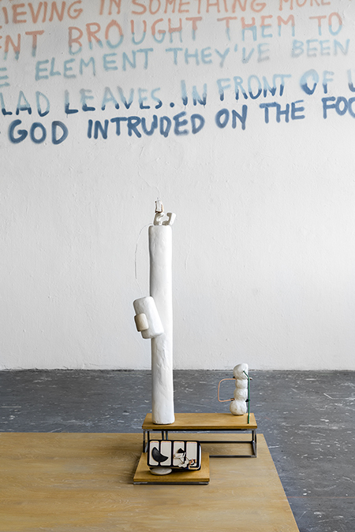
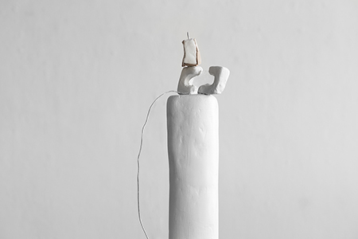

A Multi-level Crossing Diagram, 2018
Open Studio, 2018
Under The Circular, 2015
Copyright © 2018 Lim Cha
all rights reserved.
오픈스튜디오, 프랑크푸르트 암 마인, 2018
Rundgang 2018, Daimlerstraße Frankfurt am Main, 2018

<세 가지 연구> Three studies
혼합 재료, 가변 크기, 2018
의학 도식을 조각으로 변환하여 어떻게 세울 지 연구. 두꺼운 다이어그램과 세포 조각을 변환한 작업으로 이루어져 있다.



<커비> Curvy
볼트, 점토, 카드보드,12x13x36.5cm, 2017


<박스형 도식> Box type diagram
스티로폼, 아크릴유리, 카드보드지, 못, 철사, 20x11x35cm, 2017